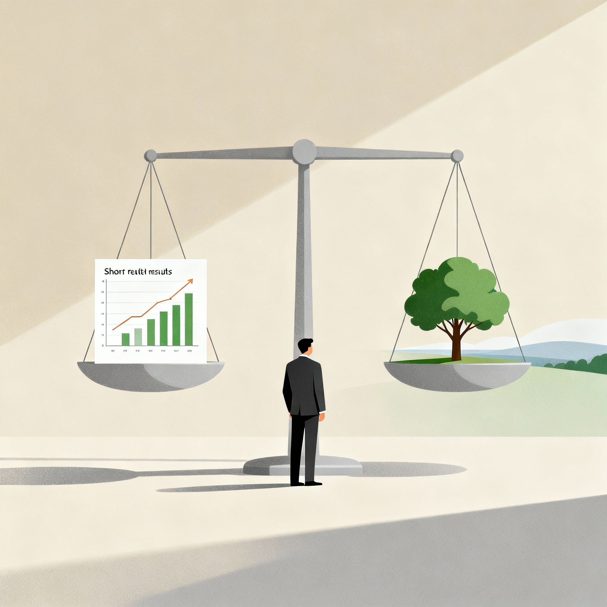
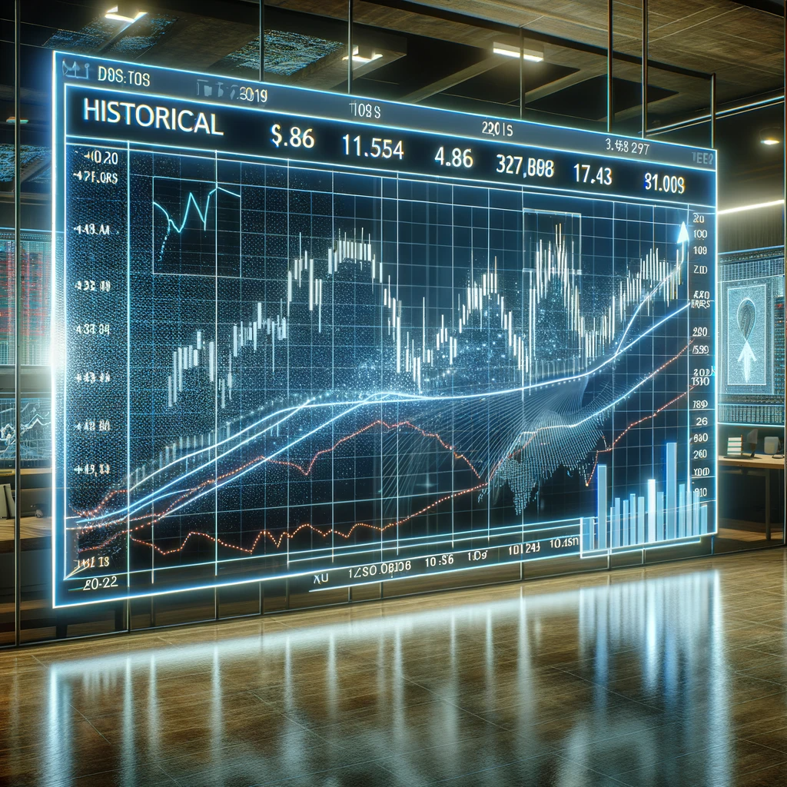
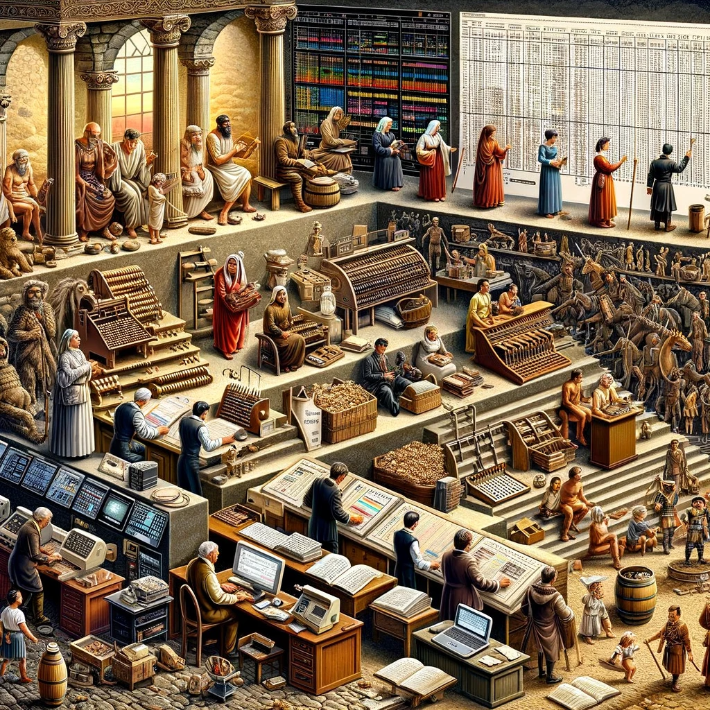

Posts
Todos os textos do grupo, organizados por área temática.
Contabilidade
Como a Reforma Tributária está Transformando a Precificação de Produtos no Brasil

Análise de Dados
Exigências de Maturidade Analítica na Reforma Tributária: por que sua empresa precisa evoluir agora?

Finanças
Short-termism: reflexões sobre o impacto do horizonte de investimento curto nas decisões corporativas
Contabilidade
A contabilidade nunca mais será a mesma!
Análise de Dados
O Coiote como Mascote Ideal para o Projeto Contabilidados
Contabilidade
Conflitos entre IFRS/CPC e Normas Fiscais da Receita Federal
Finanças
Poison Pills: Compreenda como funciona esse mecanismo de governança corporativa
Análise de Dados
Contabilidade e Data Analytics: O uso do R
Finanças
Política de Dividendos

Finanças
Teoria da Eficiência de Mercado
Finanças
Teoria de Agência e Governança Corporativa
Finanças
Visão Geral de Finanças
Finanças
Sentimento do investidor no mercado de ações
Finanças
Governança Corporativa e Proteção Legal
Finanças
Custo e Estrutura de Capital
Finanças
Anomalias
Finanças
Governança Corporativa em Situações Especiais
Finanças
Precificação de Ativos: modelos de fatores
Finanças
Modelos de Estruturas de Governança Corporativa
Finanças
Remuneração e Desempenho
Finanças
Governança Corporativa: Sinalização
Finanças
Governança Corporativa: Sistemas e melhores práticas
Finanças
Assimetria Informacional
Finanças
Teoria da Agência e Teoria dos Stakeholders
Finanças
Hipótese de Mercados Eficientes
Finanças
Alavancagem e Estrutura de Capital
Finanças
Modelos de Precificação de Ativos
Contabilidade
Qualidade da Informação Contábil
Contabilidade
Mensuração Contábil
Contabilidade
Informação Contábil e Value Relevance
Contabilidade
Fluxo de Caixa, Lucro e Accruals
Contabilidade
Estrutura Conceitual da Contabilidade

Contabilidade
Evolução Histórica e Arcabouço Teórico da Contabilidade
Contabilidade
A pesquisa em contabilidade
Contabilidade
Teoria da Contratação e Escolhas Contábeis
Contabilidade
Teoria da Agência
Contabilidade
Economia da Informação
Contabilidade
Mensuração Contábil - Fluxo de Caixa Descontado
Contabilidade
Regulação e Evolução dos Princípios e Normas de Contabilidade
Contabilidade
Evidenciação Contábil
Nenhum post encontrado.
Nenhum item correspondente